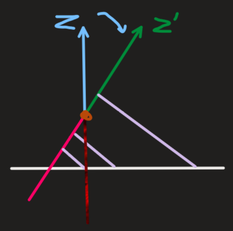

本文主要记录了有关 KITTI 数据集中点云相关的标注格式以及 PointPillars 中对 KITTI 数据集的处理。
KITTI 数据集的标注格式
| name | truncated | occluded | alpha | bbox | bbox | bbox | bbox | Dimensions/h | Dimensions/w | Dimensions/l | location | location | location | rotation_y |
|---|---|---|---|---|---|---|---|---|---|---|---|---|---|---|
| Car | 0.00 | 0 | 1.85 | 387.63 | 181.54 | 423.81 | 203.12 | 1.67 | 1.87 | 3.69 | -16.53 | 2.39 | 58.49 | 1.57 |
**注意：**dimension 维度中的顺序为 h,w,l, h 为 lidar 坐标系下沿 z 轴尺寸， w 为 lidar 坐标系下沿 y 轴尺寸，l 为 lidar 坐标系下沿 x 轴尺寸
RoboSense 的标注的 dimension 也是这样，和 kitti 一致。
但是对 location 的不一致。RoboSense 对 location 的标注是 lidar 坐标系下的 x,y,z，但是 kitti 的是 相机坐标系下的 x,y,z，对应的是 lidar 坐标系下的 -y,-z,x.
在代码中，kitti_dataset.py 用 box_camera_to_lidar 函数将 location 的三个值转换到 lidar 坐标系下，且顺序为 x_lidar, y_lidar, z_lidar，而 robosense 数据集标注时就是这个坐标系，这个顺序，因此不需要做任何改变。
重要::RoboSense 对 rotation_y 的标注和 kitti 不一致，需要将 RoboSense 标注的值 取负 之后再 减去 pi/2，即 -rot - pi/2
PointPillars 中的处理
Kitti_infos_train.pkl
1 | { |
KITTI 和 RoboSnese 的点云数据格式
1 | Kitti: Train/000000.bin |
可以看出，Kitti 和 RoboSense 在点云数据格式上是一致的，都是 lidar 坐标系下的 x,y,z,r.
KITTI 和 RoboSense 数据集在 PointPillars 代码中的不同处理
在尝试使用 RoboSense 数据集进行训练的时候，发现了很多 RoboSense 数据集和 KITTI 数据集的不同之处，因此记录下来。
- 在
kitti_infos_train.pkl中，annos 下 dimension 的顺序与标注文件的顺序有差别，将原来的[0,1,2]变成了[2,0,1],(kitti_common.py/get_label_anno())annos 下 location 的顺序与标注文件的顺序一致。 - Kitti_dataset.py 中
1 | gt_boxes = box_np_ops.box_camera_to_lidar(gt_boxes, calib["R0_rect"], calib["Tr_velo_to_cam"]) |
将 gt box 从 camera 坐标系转换到了 lidar 坐标系。
- 在 box_camera_to_lidar() 中,
xyz是 gt box 底面中心点 在 camera 坐标系下的 x,y,z 坐标，而得到的xyz_lidar是中心点在lidar 坐标系下的 x,y,z 坐标。 - RoboSense 对
rotation_y的标注和 kitti 不一致，需要将 RoboSense 标注的值取负之后再减去 pi/2，即 -rot - pi/2. - Kitti 数据集中，调用了
box_np_ops.box_camera_to_lidar将中心点从 相机坐标系 转换到 雷达坐标系，且对 dimension 的三个维度进行了重排，从l,h,w变成了w,l,h. 由于 RoboSense 的数据不需要调用box_np_ops.box_camera_to_lidar，因此后面要手动对 RoboSense 的数据的 dimension 的三个维度进行重排。
点云目标检测的经验总结
-
当雷达 XoY 平面与地面平行时，采集到的地面上的点的 Z 轴坐标值基本是一致的。
-
但是当雷达的姿态绕 Y 轴向下旋转一定角度后（雷达向下照射），采集到的地面上的点的Z轴的值不再是基本一致的了。而是会呈现出一种斜向上的状态。
-
这是因为，当雷达绕 Y 轴向下旋转后（X 轴和 Z 轴发生了旋转），地面上某一固定点在旋转后的坐标系中，Z 轴的坐标值变大，如 -5->-3。而越远处地面上的点的 Z 轴的值会越大。因而形成了一个斜向上的趋势。
 -
在对自己采集的点云图像进行测试时，需要通过调整绕 X 轴和 Y 轴的旋转角度（乘以旋转矩阵）来将路面上的点调平，也就是路面上的点云的 Z 轴坐标值基本在一个很小的范围内，且这个范围应该在模型的检测范围内。同时也要考虑，大车顶部的点在调整路面点的 Z 轴后，是否超出 Z 轴检测范围。因为如果超出的话，会导致大车顶部的一些点无法参与到模型的计算中去。因为其在构造 pillars 的时候就已经被丢弃了。
-
发现当雷达架设过高，俯视程度过大的时候，现有的模型检测效果不好。推测是由于训练集是在车上采集的，视角相对较平。而俯视视角采集的点云数据和训练集偏差较大，造成效果不好。在采集的两段数据中，较高的天桥上效果不好，但是较低的台阶上效果还可以。